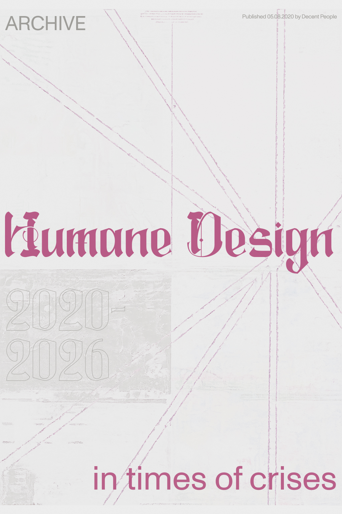

In the year of 2020, one insight became clear — in times of crisis, people crave simplicity and clear direction
This was evident when researching how the COVID-19 pandemic impacted the digital retail space - but its reach went far beyond that. The global shock prompted a shift in how we navigate uncertainty, make decisions, and engage with the world around us.
Now, many years later, we’re still unraveling the aftermath. The pandemic reshaped lives across every layer - health, relationships, economies, and identities. It introduced a collective sense of disorientation, and for many, it was the first time confronting prolonged ambiguity on such a scale. In that environment, design wasn’t just about aesthetics or utility - it became a tool for emotional grounding, clarity, and resilience.
This reflection invites a deeper question: how can design continue to meet moments of crisis with simplicity, not through oversimplification, but by guiding people toward what matters most.
EMOTIONAL STATES
Crises have a deep and lasting effect on how people think, feel, and behave. Whether personal or global, disruptive events tend to heighten stress, trigger anxiety, and generate a sense of helplessness. These aren’t just emotional responses - they often lead to concrete shifts in decision-making, routines, and priorities.
Researchers have observed patterns that repeat across different types of crises, from economic downturns to global pandemics. One common thread is the human desire to simplify: when faced with uncertainty, people instinctively seek clarity, stability, and ease - especially when their mental bandwidth is stretched.
“Stressful events such as recessions and crises typically also increase a consumer desire for simplicity to ease their cognitive load. This affects decisions as wide-ranging as design choices, brand preferences, and even where people choose to live.”
— Jonas Colliander & Sara Rosengren, *Shifting Lanes*

Creativity in Times of Change
When a crisis hits the world, new ideas often emerge in response to shifting needs. One such example is the Bauhaus School of Design, which was born out of the upheaval following World War I. At its core was the principle form follows function. The school emphasized the importance of usability within design and architecture, becoming a key force in the rise of functionalism during the first half of the 20th century.
“The Bauhaus designed not only for the purpose of the product itself but also for the needs of the population."
— Hawra Abdulla, Carnegie Mellon School Of Design
Generations of designers and architects have been inspired by the Bauhaus approach since then, with functionalism as a guiding principle. Yet, while its ideals were grounded in accessibility and simplicity, many of its objects remained out of reach for the everyday person—highlighting a tension between its utopian vision and its real-world application. Still, its legacy endures, reminding us that in moments of change, design can reimagine how we live, work and create.
Functionalism today
How do we serve the need for simplicity today? Functionality and simplification are the main pillars, together with a strong belief that the user’s perspective leads to a better solution. UX can be thought of as modern-day functionalism, tailored for the digital era. Good design is hard to notice because of its seamlessness, Its success often lies in its invisibility: the smoother the experience, the less we notice it - guiding actions effortlessly, removing friction, and making each next step feel like the natural choice.
“Design is really an act of communication, which means having a deep understanding of the person with whom the designer is communicating.”
— Donald A. Norman, *The Design of Everyday Things*
To design with true empathy is to remain flexible - to shape the experience around the user, not the other way around. It means adapting to their expectations, context, and mental models in a way that feels intuitive, not imposed.
“Why do we need to know about the human mind? Because things are designed to be used by people, and without a deep understanding of people, the designs are apt to be faulty, difficult to use, difficult to understand.”
— Donald A. Norman, *The Design of Everyday Things*
In a time when cognitive and emotional bandwidth are stretched thin, UX design offers something essential: clarity, flow, and a sense of ease. And in doing so, it becomes a quiet but powerful response to the complexity of modern life.
Guidelines
→ Communicate clearly and honestly. Say what you mean, follow through, and avoid making promises you can’t keep. Trust is built through consistency. → Use simple, everyday language. Avoid technical jargon or unnecessarily complex terms. Speak in a way people understand—especially under pressure. → Offer timely, reassuring feedback. Let people know their actions have been received and understood. In moments of stress or uncertainty, clarity matter more. → Design for real-world accessibility. Your product or service should feel intuitive and inclusive, supporting users across a range of needs, contexts, and abilities.
Final thoughts
In times of crisis, thoughtful design isn’t just a nice-to-have - it’s essential. When purpose and function become the core pillars of a product or service, they create not only better experiences, but a sense of stability and support for the people using them.
Supporting users through uncertainty means offering tools that are simple, efficient, and grounded in empathy. This applies not only to digital services and retail environments, but also to public-sector systems and government communication - where clarity and usability can directly impact people's lives.